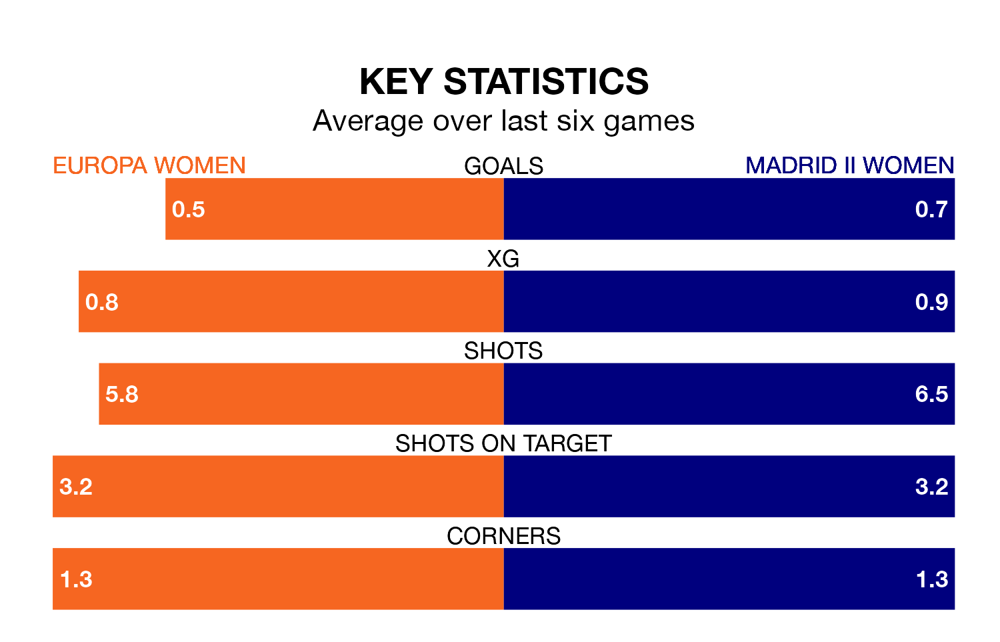

Sunday's early match sees two relegation candidates play each other, as 12th-ranked Europa Women host bottom of the table Madrid II Women.
Europa have picked up 14 points from their first 14 Primera Federación Femenina games, with four wins and two draws.
That is six points more than Madrid II have collected, having won two and drawn two.
Europa are in terrible form in the Primera Federación Femenina, with no wins and a draw from their last six games.
But with no wins and six losses over that period, Madrid II's form is even worse – they have taken no points from 18, compared to the home side's one.
With 12 goals in 18 games so far this season, the visitors are the league's lowest scorers with 0.7 goals per game. And they are conceding more than average, letting in 33 goals at a rate of 1.8 per game.
Europa are also below average scorers, with 0.8 goals per game, compared to a league average of 1.2. They have conceded 2.1 goals per game.
Europa's last match was on February 11, a 1-0 loss against Espanyol Women.
Madrid II lost 3-1 against Athletic Club II Women last time out, also on Sunday.
Updated: 13:04 (UTC), 16/02/24